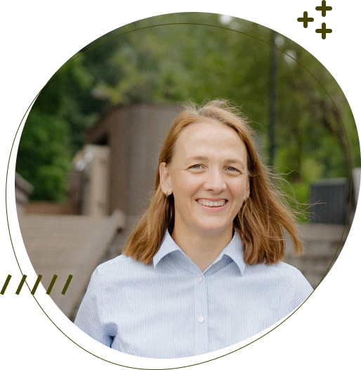

ОБО МНЕ
У меня два высших образований, я закончила РХТУ им. Д.И. Менделеева. Работала в разных местах, начиная от НИИ, МЧС России и частной медицинской клиники, которая лечит варикоз. Потом я ушла в декрет, у меня появилось трое детей и жизнь моя очень сильно поменялась. Я стала бегать, чтобы отвлечься от быта. Уже более трех лет я являюсь организатором всероссийского движения «5 вёрст» в своем районе Москвы. Мой опыт в спорте и моя любовь к бегу помогают мне не только поддерживать себя в форме, но и дают мне возможность помогать другим людям. Осенью я решила освоить новую профессию и попробовать себя в верстке сайтов. В ходе обучения я получила знания в области HTML, CSS и JavaScript, а также умения работать с графическими редакторами и программами для создания прототипов сайтов.
ПРОЕКТЫ
В рамках моей учебы было выполнено несколько проектов: верстка на HTML и CSS – проект Simple Starter Template создание калькулятора на Java Script создание приложения ToDo List на Vue.js


КОНТАКТЫ